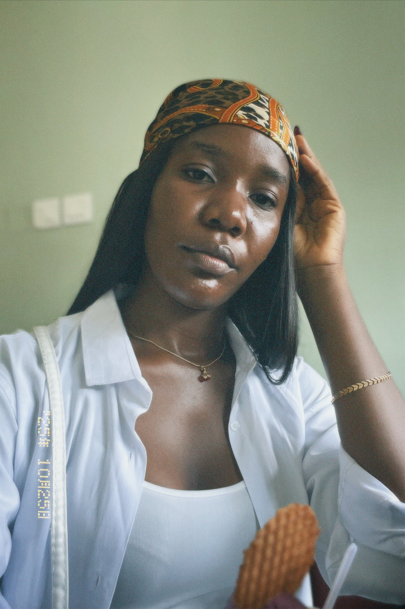
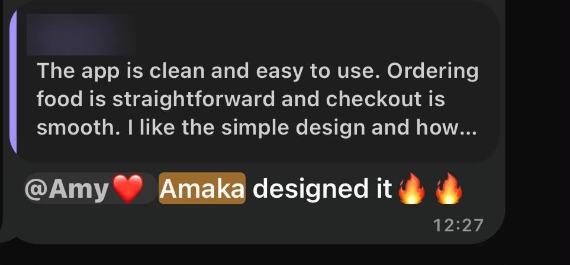
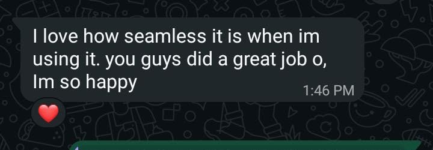
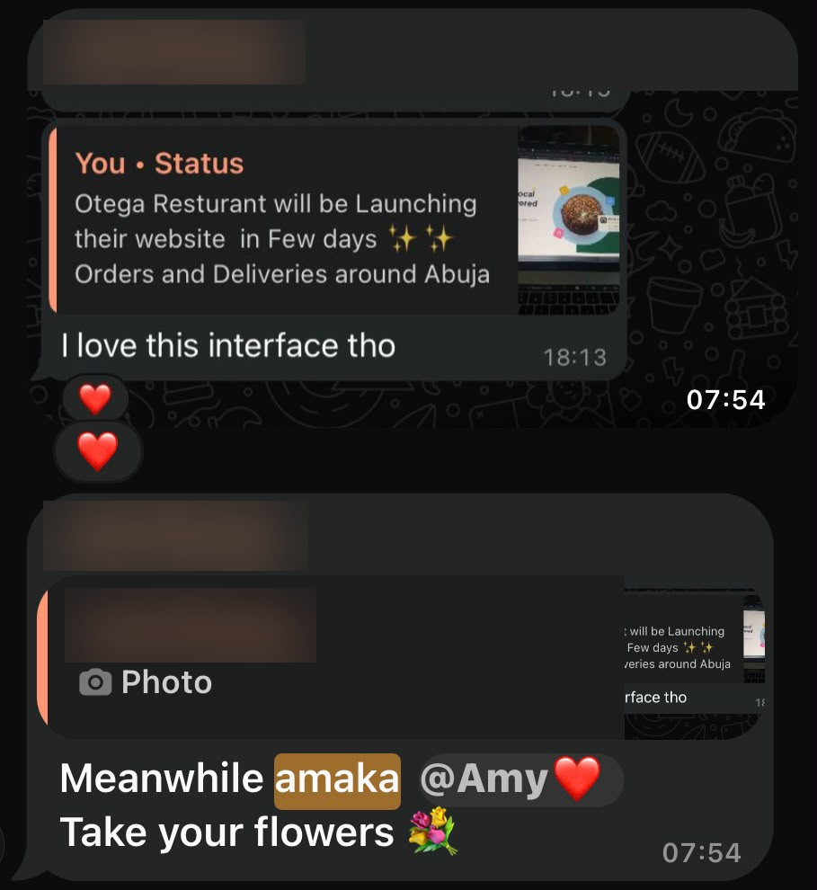
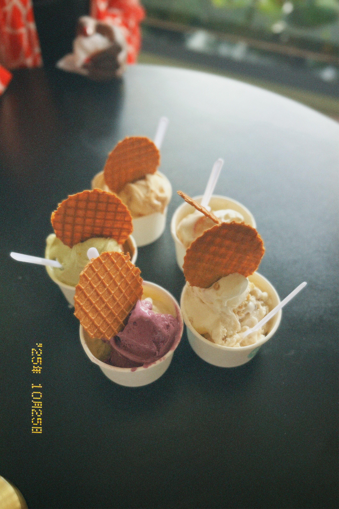
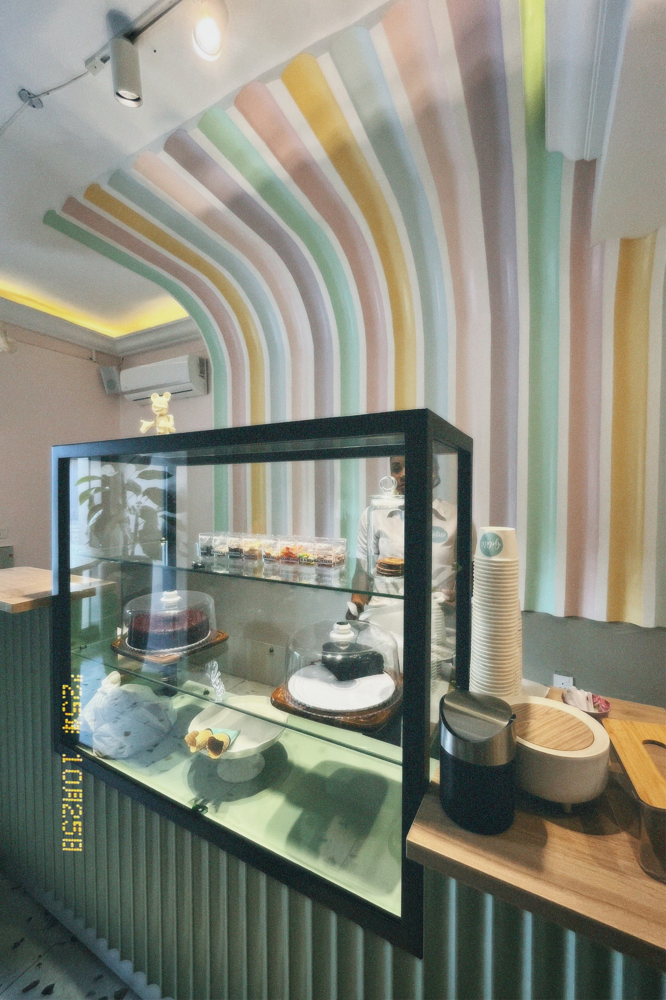
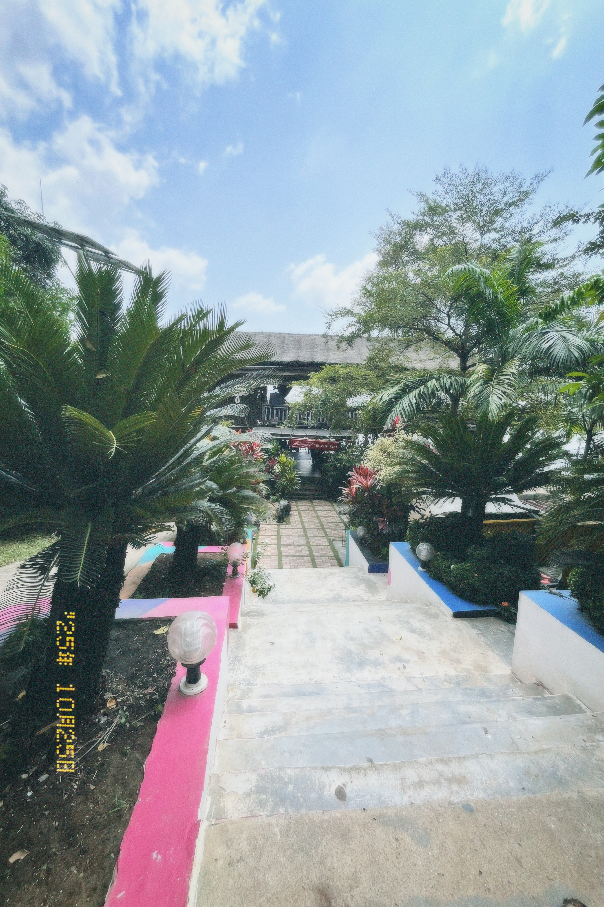

Research & strategy
User research, problem definition, and information architecture to establish what matters before designing screens.
I turn complex product problems into clear, thoughtful web and mobile experiences people can navigate with confidence.
I’m Blessing, a UI/UX designer with over three years of experience across fintech, logistics, hospitality, and digital brands. I start with the problem, then shape flows and interfaces around what people need to do.

Good design starts with understanding where people get stuck. I bring research, structure, and visual craft together to make the next step feel clear.
User research, problem definition, and information architecture to establish what matters before designing screens.
User flows and wireframes that organize complex tasks into a coherent journey.
Visual interface design, interactive prototypes, and visual identity details that make the experience feel consistent.



Amaka is another name I use.
I love cooking and trying new recipes, films with strong stories and visuals, and the small moments I capture in photos. I’m also growing an illustration practice.



Available for full-time UI/UX roles and freelance projects. If you have a product challenge or an opportunity in mind, I’d love to hear about it.